Set/get layer mode. Mode is one of these:
| top layer |
| 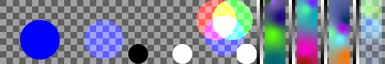 | |
| bottom layer |
| 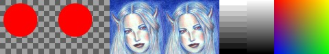 | |
| normal |
| 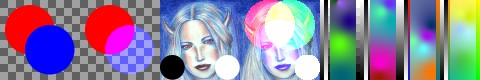 | D=L applied with alpha: D=(L*aL+S*(1-aL)*aS) / (aL+(1-aL)*aS), aD=(aL+(1-aL)*aS) |
|
| add |
| 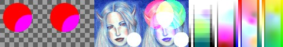 | D=L+S applied with alpha, aD=aS |
| subtract |
| 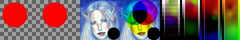 | D=S-L applied with alpha, aD=aS |
| multiply |
| 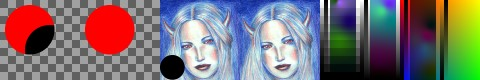 | D=S*L applied with alpha, aD=aS |
| divide |
| 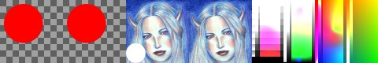 | D=S/L applied with alpha, aD=aS |
| negdivide |
| 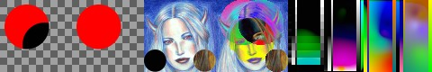 | D=1.0-S/L applied with alpha, aD=aS |
| modulo |
| 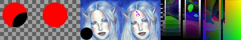 | D=S%L applied with alpha, aD=aS |
| invsubtract |
| 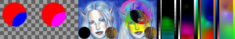 | D=L-S applied with alpha, aD=aS |
| invdivide |
| 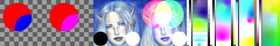 | D=L/S applied with alpha, aD=aS |
| invmodulo |
| 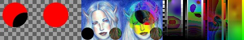 | D=L%S applied with alpha, aD=aS |
| imultiply |
| 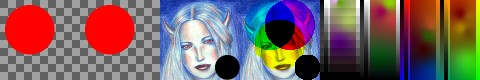 | D=(1-L)*S applied with alpha, aD=aS |
| idivide |
| 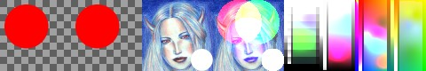 | D=S/(1-L) applied with alpha, aD=aS |
| invidivide |
| 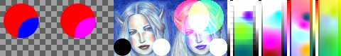 | D=L/(1-S) applied with alpha, aD=aS |
| difference |
| 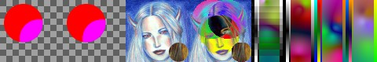 | D=abs(L-S) applied with alpha, aD=aS |
| max |
| 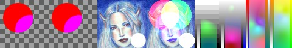 | D=max(L,S) applied with alpha, aD=aS |
| min |
| 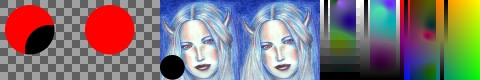 | D=min(L,S) applied with alpha, aD=aS |
| bitwise_and |
| 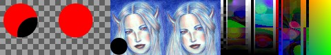 | D=L&S applied with alpha, aD=aS |
| bitwise_or |
| 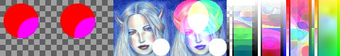 | D=L|S applied with alpha, aD=aS |
| bitwise_xor |
| 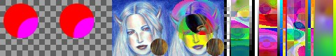 | D=L^S applied with alpha, aD=aS |
|
| replace |
| 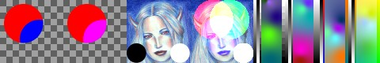 | D=(L*aL+S*(1-aL)*aS) / (aL+(1-aL)*aS), aD=aS |
| red |
| 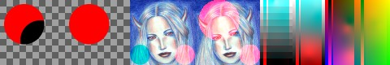 | Dr=(Lr*aLr+Sr*(1-aLr)*aSr) / (aLr+(1-aLr)*aSr), Dgb=Sgb, aD=aS |
| green |
| 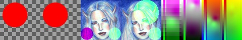 | Dg=(Lg*aLg+Sg*(1-aLg)*aSg) / (aLg+(1-aLg)*aSg), Drb=Srb, aD=aS |
| blue |
| 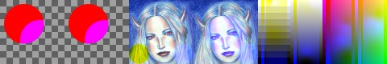 | Db=(Lb*aLb+Sb*(1-aLb)*aSb) / (aLb+(1-aLb)*aSb), Drg=Srg, aD=aS |
| hardlight |
| 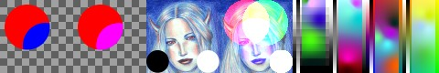 | Like photoshop hardlight layer mode, aD=aS |
|
| replace_hsv |
| Dhsv=Lhsv apply with alpha, aD=aS |
| hue |
| 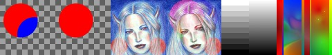 | Dh=Lh apply with alpha, Dsv=Lsv, aD=aS |
| saturation |
| 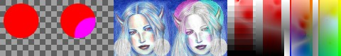 | Ds=Ls apply with alpha, Dhv=Lhv, aD=aS |
| value |
| Dv=Lv apply with alpha, Dhs=Lhs, aD=aS |
| color |
| 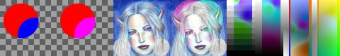 | Dhs=Lhs apply with alpha, Dv=Lv, aD=aS |
| value_mul |
| 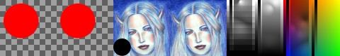 | Dv=Lv*Sv apply with alpha, Dhs=Lhs, aD=aS |
|
| darken |
| 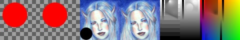 | Dv=min(Lv,Sv) apply with alpha, Dhs=Lhs, aD=aS |
| lighten |
| 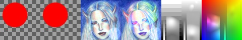 | Dv=max(Lv,Sv) apply with alpha, Dhs=Lhs, aD=aS |
| saturate |
| 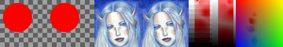 | Ds=max(Ls,Ss) apply with alpha, Dhv=Lhv, aD=aS |
| desaturate |
| 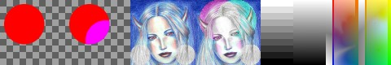 | Ds=min(Ls,Ss) apply with alpha, Dhv=Lhv, aD=aS |
| hls_replace |
| 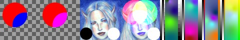 | Dhls=Lhls apply with alpha, aD=aS |
| hls_hue |
| 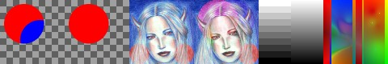 | Dh=Lh apply with alpha, Dsv=Lsv, aD=aS |
| hls_saturation |
| 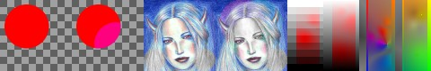 | Ds=Ls apply with alpha, Dhv=Lhv, aD=aS |
| hls_lightness |
| 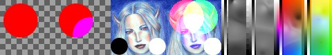 | Dl=Ll apply with alpha, Dhs=Lhs, aD=aS |
| hls_color |
| 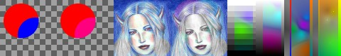 | Dhs=Lhs apply with alpha, Dl=Ll, aD=aS |
| hls_lightness_mul |
| 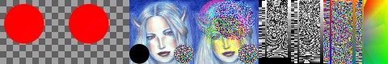 | Dl=Ll*Sl apply with alpha, Dhs=Lhs, aD=aS |
| hls_darken |
| 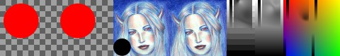 | Dl=min(Ll,Sl) apply with alpha, Dhs=Lhs, aD=aS |
| hls_lighten |
| 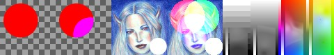 | Dl=max(Ll,Sl) apply with alpha, Dhs=Lhs, aD=aS |
| hls_saturate |
| Ds=max(Ls,Ss) apply with alpha, Dhl=Lhl, aD=aS |
| hls_desaturate |
| Ds=min(Ls,Ss) apply with alpha, Dhl=Lhl, aD=aS |
|
| dissolve |
| 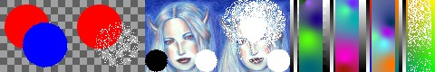 | i=random 0 or 1, D=i?L:S, aD=i+aS |
| behind |
| 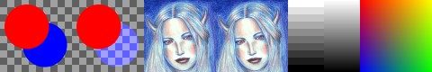 | D=(S*aS+L*(1-aS)*aL) / (aS+(1-aS)*aL), aD=(aS+(1-aS)*aL); simply swap S and L |
| erase |
| 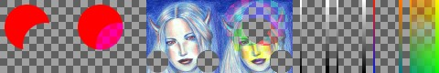 | D=S, aD=aS*(1-aL) |
|
| screen |
| 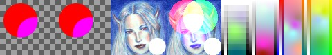 | 1-(1-S)*(1-L) applied with alpha, aD=aS |
| overlay |
| 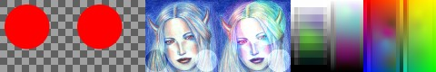 | (1-(1-a)*(1-b)-a*b)*a+a*b applied with alpha, aD=aS |
| burn_alpha |
| 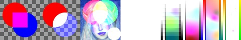 | aD=aL+aS applied with alpha, D=L+S; experimental, may change or be removed |
|
| equal |
 | each channel D=max if L==S, 0 otherwise, apply with alpha |
| not_equal |
| 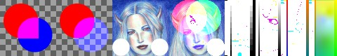 | each channel D=max if L!=S, 0 otherwise, apply with alpha |
| less |
| 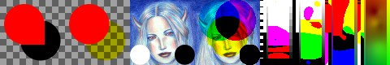 | each channel D=max if L<S, 0 otherwise, apply with alpha |
| more |
| each channel D=max if L>S, 0 otherwise, apply with alpha |
| less_or_equal |
| each channel D=max if L<=S, 0 otherwise, apply with alpha |
| more_or_equal |
| each channel D=max if L>=S, 0 otherwise, apply with alpha |
|
| logic_equal |
| logic: D=white and opaque if L==S, black and transparent otherwise |
| logic_not_equal |
| logic: D=white and opaque if any L!=S, black and transparent otherwise |
| logic_strict_less |
| logic: D=white and opaque if all L<S, black and transparent otherwise |
| logic_strict_more |
| logic: D=white and opaque if all L>S, black and transparent otherwise |
| logic_strict_less_equal |
| logic: D=white and opaque if all L<=L, black and transparent otherwise |
| logic_strict_more_equal |
| logic: D=white and opaque if all L>=L, black and transparent otherwise |
 Image.Layer()->image()
Image.Layer()->image()